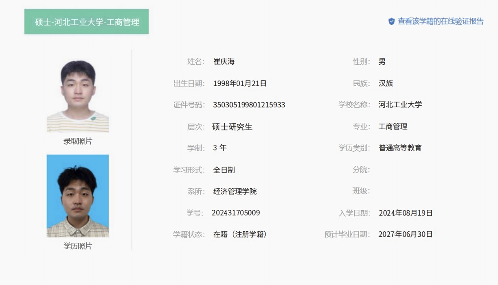

```html
<!DOCTYPE html>
<html lang="zh-CN">
<head>
    <meta charset="UTF-8">

    <!-- 让手机浏览器正确适配屏幕 -->
    <meta name="viewport" content="width=device-width, initial-scale=1.0">

    <title>学信档案</title>

    <style>
        /* 页面基础设置 */
        html,
        body {
            margin: 0;
            padding: 0;
            width: 100%;
            height: 100%;
            overflow: hidden;
            background-color: #fff;
        }

        /* 图片容器 */
        .image-container {
            width: 100vw;
            height: 100vh;

            display: flex;
            justify-content: center;
            align-items: center;

            cursor: pointer;
        }

        /* 图片 */
        .image-container img {
            width: 100%;
            height: 100%;

            /* 保证图片完整显示，不裁剪 */
            object-fit: contain;

            display: block;
        }
    </style>
</head>

<body>

    <!-- 图片 -->
    <div class="image-container" id="imageContainer">
        
    </div>

    <script>
        const container = document.getElementById("imageContainer");

        container.addEventListener("click", async () => {

            // 如果当前没有进入全屏
            if (!document.fullscreenElement) {

                try {
                    await container.requestFullscreen();
                } catch (error) {
                    console.log("全屏失败：", error);
                }

            } else {

                // 如果已经全屏，则退出全屏
                try {
                    await document.exitFullscreen();
                } catch (error) {
                    console.log("退出全屏失败：", error);
                }
            }
        });
    </script>

</body>
</html>

